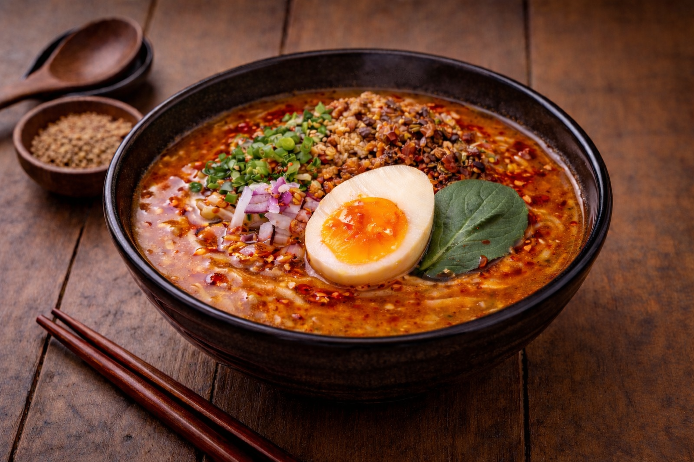

LANG /

Spicy Miso Ramen
Soup
Sauce — House Miso Mix
- Blended miso (white & red)
- Lard
- Sesame oil
- Onion
- Garlic
- Ginger
- Soy sauce (contains gluten)
- Mirin (Japanese sweet rice wine)
- Gochujang (Korean spicy fermented paste)
- Worcestershire sauce
- Tahini (sesame paste)
- Sugar
- Sea salt
- Black pepper
- Hua jiao (Chinese Sichuan pepper)
- Chili powder
- House chili mix (three varieties)
Toppings
- Spicy ground pork (ingredients)
- Egg (seasoned soft-boiled egg)
- Green onion
- Red onion
- White sesame
- Fried onion & garlic
- Chili oil
- Doubanjiang (spicy fermented bean paste)
Острый Рамен Мисо
Суп
Соус — Фирменная Смесь Мисо
- Смешанное мисо (белое и красное)
- Свиной жир
- Кунжутное масло
- Лук
- Чеснок
- Имбирь
- Соевый соус (содержит глютен)
- Мирин (японское сладкое рисовое вино)
- Кочуджан (корейская острая ферментированная паста)
- Вустерский соус
- Тахини (кунжутная паста)
- Сахар
- Морская соль
- Чёрный перец
- Хуа цзяо (китайский сычуаньский перец)
- Порошок чили
- Смесь чили (три вида)
Топпинги
- Острый фарш из свинины (ингредиенты)
- Яйцо (маринованное яйцо всмятку)
- Зелёный лук
- Красный лук
- Белый кунжут
- Жареный лук и чеснок
- Масло чили
- Доубаньцзян (острая ферментированная бобовая паста)
Կծու Միսո Ռամեն
Ապուր
Սոուս — Տնական Միսո Միքս
- Խառը միսո (սպիտակ և կարմիր)
- Խոզի ճարպ
- Քնջութի յուղ
- Սոխ
- Սխտոր
- Կոճապղպեղ
- Սոյայի սոուս (պարունակում է գլյուտեն)
- Միրին (ճապոնական քաղցր բրնձի գինի)
- Կոչուջան (կորեական կծու խմորված մածուկ)
- Վուստերի սոուս
- Թահինի (քնջութի մածուկ)
- Շաքար
- Ծովի աղ
- Սև պղպեղ
- Հուա ձյաո (չինական սիչուանի պղպեղ)
- Չիլի փոշի
- Տնական չիլի միքս (երեք տեսակ)
Տոպինգներ
- Կծու աղացած խոզ (բաղադրիչներ)
- Ձու (համեմված կիսահում ձու)
- Կանաչ սոխ
- Կարմիր սոխ
- Սպիտակ քնջութ
- Տապակած սոխ և սխտոր
- Չիլի յուղ
- Դոուբանձյան (կծու խմորված լոբու մածուկ)
← Back to Menu